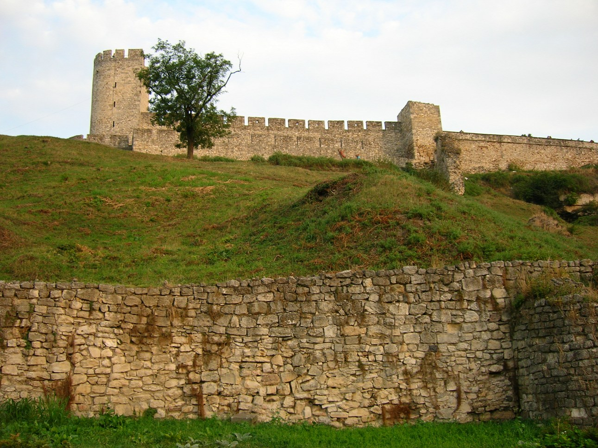
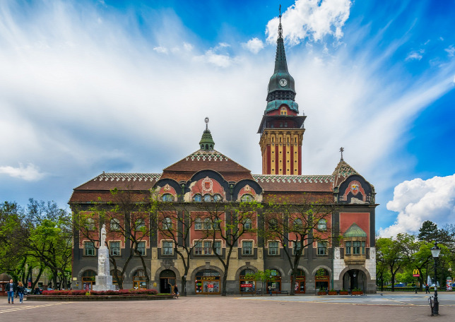
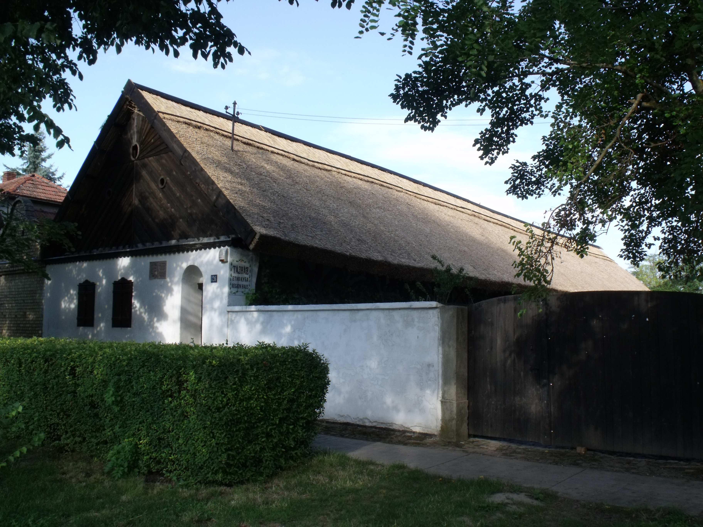

Simonyi Határtalanul 2020
Indulás: Május 4 8:00
Ezt a projectet először 2011-ben hozták létre.
1. nap:
Indulás Pécsről, megérkezés topolyába (~12:00)
Partneriskola meglátogatása, városnézés és közös főzés a topolyai tónál.

2.nap:
Kirándulás Nándorfehérvárra, Séta a belvárosban. Nándorfehérvári vár megtekintése.

3.nap:
Kirándulás szabadkára, Szecessziós épületek megtekintése. Látogatás a Palicsi állatkertbe.

4.nap:
Kirándulás Újvidékre, Városi séta. Péterváradi vár és kazamatáinak megtekintése.
Túra a Tarcal hegyre.
5.nap:
Topolyai tájház megtekintése megtekintése. Hazautazás.
